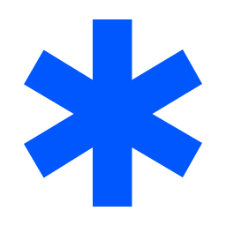

Брэндийн суурь
Компани брэндээ бүрдүүлэхэд юу хэрэгтэй вэ?
- Брэндийн стратеги
- Компани хэнд үйлчлэх, ямар асуудлыг шийдэх, захиалагчид яагаад Хожлыг сонгохыг тодорхойлно.
- Гол санаа ба өнгө аяс
- Компанийн товч танилцуулга, баримтаар дэмжсэн гол санаа, өөр өөр нөхцөлд хэрхэн бичих жишээ.
- Брэндийн дүр төрх
- Лого, өнгө, үсгийн хэв, зураг дүрслэлийн чиглэл, ашиглахад бэлэн эх файлууд.
- Дизайны хэл
- Дүр төрхийг бодит материалд хэрэглэх зарчим. Мэдээллийн эрэмбэ, зохиомж, зай хэмжээ, өнгө, дүрслэлийн хэрэглээ багтана.
- Загвар ба дахин ашиглах материал
- Давтагддаг ажилд зориулсан, засаж ашиглах бэлэн загварууд. Программ хангамжид үүнийг интерфэйсийн бүрэлдэхүүн хэсэг, үйлдлийн загвар, хүртээмжийн зарчмаар өргөжүүлж болно.
- Гарын авлага ба хариуцлага
- Хэрэглэх материал, дүрэм, жишээ нэг дор байна. Хэн шийдвэр гаргаж, хэн шинэчлэх нь тодорхой байна.
Үүнийг хэрхэн бүрдүүлэх вэ?
- Судална. Одоо байгаа материалаа нягталж, харилцагчид болон багийнхантай ярилцана. Тухайн асуудлыг өнөөдөр хэрхэн шийдэж байгааг ойлгоно.
- Брэндийн байр сууриа тодорхойлно. Хэнд үйлчлэх, ямар асуудлыг шийдэх, захиалагчид яагаад Хожлыг сонгохыг товч бичнэ.
- Бодит материал дээр туршина. Үг хэллэг, дүр төрхөө нүүр хуудас, бүтээгдэхүүний дэлгэц, үйлчилгээний танилцуулгад хэрэглэж үзнэ.
- Үр дүнтэй шийдлээ баримтжуулна. Хэд хэдэн материалд тохирсон зарчмаа нэгтгэж, давтагддаг ажилд зориулж загвар бэлтгэнэ.
- Хэрэглэж, сайжруулна. Захиалагчдын хамгийн түрүүнд хардаг материалаас эхэлж, санал хүсэлтээр гарын авлагаа шинэчилнэ.
Брэндийн анхны тойм
Энэ тоймд брэндийн ажлыг эхлэх үеийн нөхцөл, тухайн үед тавьсан зорилтуудыг тэмдэглэсэн.
Хожилд одоо юу байна вэ?
Хожил нь Монголд хиймэл оюуны зөвлөх үйлчилгээ, программ хангамж хөгжүүлэлт, хиймэл оюуны шийдэл хөгжүүлэлт эрхэлдэг компани. Халх монгол бичвэрийг яриа болгон хувиргах туршилтын hojil-tts төсөл нь хиймэл оюуны шийдэл хөгжүүлэлтийн нэг жишээ юм.
hojil-brand хавтсанд анх зөвхөн Git-ийн мета өгөгдөл байсан. Энэ тоймыг компанийн танилцуулга болон компьютер дээрх hojil-tts репозиторт тулгуурлан гаргав. Энд дурдсан зарим асуудлыг өөр газар хадгалсан брэндийн эсвэл харилцагчийн материалд тусгасан байж болно.
- Брэндийн стратеги
- Одоо байгаа зүйлХожил Монголд гурван чиглэлээр үйлчилгээ үзүүлдэг.
hojil-ttsнь хиймэл оюуны шийдэл хөгжүүлэлтийн нэг жишээ. - Нягталсан материалд дутуу зүйлЯмар захиалагчид анхаарах, тэд ямар асуудлаар Хожилд хандах, яагаад сонгохыг тодорхойлох. Үйлчилгээ тус бүрийн хүрээ, хоорондын уялдааг гаргах.
- Гол санаа ба бичвэрийн өнгө аяс
- Одоо байгаа зүйлҮйлчилгээний гурван чиглэл тодорхой.
hojil-tts-ийн README болон ярианы чанарыг сонсож үнэлсэн тэмдэглэл хиймэл оюуны хөгжүүлэлтийн жишээг баримтжуулсан. - Нягталсан материалд дутуу зүйлКомпани болон үйлчилгээ тус бүрийг энгийн үгээр танилцуулах. Зөвлөх үйлчилгээ, программ хангамж хөгжүүлэлтийн ажлын жишээ цуглуулж, эхний материалуудыг ямар хэлээр бэлтгэхээ шийдэх.
- Дүр төрх
- Одоо байгаа зүйлХожил хар дэвсгэр дээр цэнхэр одон тэмдэгтэй кирилл бичвэрэн логотой.
- Нягталсан материалд дутуу зүйлЛого хэрэглэх дүрэм, шаардлагатай хувилбарууд, өнгө, үсгийн хэв, дүрслэлийн чиглэлээ тодорхойлох. Үсгийн хэв сонгохдоо монгол кирилл үсгийг бүрэн дэмждэг эсэхийг шалгах.
- Дизайны хэл
- Одоо байгаа зүйлЯриа үүсгэх, тоглуулах, харьцуулах, үнэлэх туршилтын хуудас бий.
- Нягталсан материалд дутуу зүйлКомпанийн материалын зохиомж, бичвэрийн шатлал, өнгөний хэрэглээг нэг мөр болгох. Бүтээгдэхүүний үзүүлэн уг дизайны хэлэнд хэрхэн нийцэхийг туршилтын хуудсан дээр шалгах.
- Загвар ба дахин ашиглах материал
- Одоо байгаа зүйлДотоодод ажилладаг туршилтын хуудас нь бүтээгдэхүүнийг үзүүлэх боломж олгодог.
- Нягталсан материалд дутуу зүйлКомпанийн товч танилцуулга, хэрэгжүүлсэн төслийг танилцуулах загвараас эхлэх. Борлуулалт, маркетингийн хэрэгцээ тодорхой болоход давтагддаг ажлын загваруудыг нэмэх.
- Гарын авлага ба хариуцах эзэн
- Одоо байгаа зүйлТехникийн репозитор баримт бичгийн индекстэй. Энэ файл нь брэндийн баримтжуулалтын эхлэл юм.
- Нягталсан материалд дутуу зүйлБаталсан шийдвэр, брэндийн материалыг нэг дор байршуулж, шинэчлэл хариуцах хүнийг тогтоох.

Эх сурвалж — TTS төслийн README, туршилтын хуудасны заавар, туршилтын хуудасны интерфэйс, ярианы чанарыг сонсож үнэлсэн дүн.
Юунаас эхлэх вэ?
Компанийн брэндийн байр суурийг нэг хуудсанд тодорхойлохоос эхэлнэ. Хожил Монголд хэнд тусалдаг, захиалагчид ямар асуудлаар ханддаг, яагаад тус компанийг сонгохыг тайлбарлана. Эхний танилцуулгыг «Хожил нь Монголд хиймэл оюуны зөвлөх үйлчилгээ үзүүлж, программ хангамж болон хиймэл оюуны шийдэл хөгжүүлдэг компани» гэж бичиж болно.
- Хэрэгжүүлсэн болон хэрэгжүүлэх боломжтой ажлуудаа тоймлоно. Хэн Хожилд ямар асуудлаар хандсан, өмнө нь юу туршсан, яагаад Хожилтой хамтран ажиллах талаар бодсоныг тодруулна. Эдгээр жишээнд тулгуурлан эхний ээлжид ямар захиалагчид, ямар асуудалд анхаарахаа сонгоно.
- Гурван үйлчилгээг захиалагчийн өнцгөөс тайлбарлана. Ямар үед Хожилд хандах, компани юу хийж өгөх, амжилттай хамтын ажиллагаа ямар үр дүнтэй байхыг үйлчилгээ тус бүрээр тодорхойлно. Компанийн хэрэгжүүлэхээр зорьж буй төслүүдэд зөвлөх ажил хаана дуусаж, хэрэгжүүлэлт хаанаас эхлэхийг тодруулна.
- Үйлчилгээ бүрийг бодит жишээгээр дэмжинэ. Нийтэд танилцуулж болох төсөл, үр дүн, харилцагчийн санал хүсэлтийг цуглуулна.
hojil-tts-ийг хиймэл оюуны хөгжүүлэлтийн жишээ болгон танилцуулж, туршилтын шатанд байгааг тодорхой бичнэ. Туршилтын хуудас дотоод орчинд ажилладаг, загварын экспортолсон хувилбар хязгаарлагдмал хандалттай, ярианы чанарыг цөөн жишээн дээр сонсож үнэлсэн. - Товч баримтаа компанийн танилцуулгад ашиглана. Компанийн тайлбар, гурван үйлчилгээ, ажлын жишээ, холбоо барих мэдээлэл бүхий нүүр хуудас эсвэл нэг хуудасны танилцуулга бэлтгэнэ. Үүн дээр дүр төрхийн эхний шийдлүүдээ туршина.
Эхний зорилт бол гол захиалагч болон тэдний асуудлыг тодорхойлсон, гурван үйлчилгээг энгийн үгээр тайлбарласан, боломжтой хэсэг бүрийг бодит жишээгээр дэмжсэн нэг хуудасны товч баримт юм.
Брэндийн стратеги
Байр суурь
Хожил Текноложис нь Монгол аж ахуй нэгжүүдийн ажлын онцлогт нийцсэн хиймэл оюун, программ хангамжийн шийдэл боловсруулж, үйл ажиллагааных нь үр ашгийг нэмнэ.
Үйлчлүүлэгчид
Бид Монголын аж ахуй нэгжүүдэд үйлчилдэг. Баримт бичиг, мессеж, систем хооронд мэдээлэл гараар дамжуулах зэрэг давтагддаг ажлыг хөнгөвчлөхөд анхаарна.
Үйлчилгээ
- Хиймэл оюуны зөвлөх үйлчилгээ. Хиймэл оюун нэвтрүүлэхэд шаардлагатай ажлын явцыг судалж, хаана цаг хэмнэж болох, үр дүнг хэрхэн хэмжихийг тодорхойлно.
- Программ хангамж хөгжүүлэлт. Багийн хэрэгцээнд нийцсэн программ бүтээж, ашиглаж буй систем, өгөгдөлтэй холбоно.
- Хиймэл оюуны шийдэл хөгжүүлэлт. Ажлын хүрээг тогтоож, шийдэл боловсруулан нэвтрүүлнэ.
Хэрэгжүүлсэн төслүүд
- Golomt Insights · Голомт банканд зориулсан агуулга удирдах системтэй (CMS) вебсайт.
- Gangan · Urangan Corporation компанийн арга хэмжээнд зориулсан агуулга удирдах системтэй вебсайт.
- Gerelty Today · Агуулга удирдах системтэй нийтлэлийн вебсайт.
Хиймэл оюуны судалгааны хүрээнд hojil-tts нэртэй, халх монгол бичвэрийг яриа болгон хувиргах туршилтын төсөл хөгжүүлж байна. Мөн хэлний том загварууд монгол хэлээр хэр сайн ажилладгийг шалгах нээлттэй эхийн үнэлгээ хийхээр төлөвлөж байна.
Яагаад Хожилтой хамтрах вэ?
Хожлын бүтээсэн вебсайтууд захиалагчийн багт агуулгаа өөрсдөө удирдаж, нийтлэх боломж олгодог. Хиймэл оюуны төсөлд мөн адил бодит хэрэглээнээс эхэлнэ. Багийн нэг ажлыг сонгож, бодит жишээн дээр туршаад, үр дүнг ямар үзүүлэлтээр хэмжихээ урьдчилан тохирно.
Гол санаа ба өнгө аяс
Компанийн танилцуулга
Хожил нь хиймэл оюун, захиалгат программ хангамжийн шийдлээр Монголын аж ахуй нэгжүүдийн үйл ажиллагааны үр ашгийг дээшлүүлэхэд тусалдаг. Тухайлбал, баримт бичиг боловсруулах, хүсэлтийг холбогдох багт хуваарилах, дотоод мэдээллээс хариулт олох зэрэг ажилд хиймэл оюун хэрхэн ашиглаж болохыг тодорхойлж, туршина.
Нүүр хуудасны бичвэр
Танай үйл ажиллагаанд нийцсэн хиймэл оюуны шийдэл
Хожил нь Монголын аж ахуй нэгжүүдэд зориулсан хиймэл оюуны систем хөгжүүлдэг. Баримт бичгээс мэдээлэл авах, хянуулах бүртгэл бэлтгэх, хүсэлтийг систем хооронд дамжуулах зэрэг нэг ажлаас эхэлж болно.
Үйлдэлд урих бичвэр · Хамтдаа шийдэл олох
Үйлчилгээг хэрхэн тайлбарлах вэ?
- Хиймэл оюуны шийдэл хөгжүүлэлт
- Танай багийн тодорхой нэг ажилд зориулсан шийдэл боловсруулж, бодит жишээн дээр туршина. Баримт бичиг боловсруулах, хүсэлт хуваарилах, дотоод мэдээллээс хариулт олох зэрэг ажлаас эхэлж болно.
- Хиймэл оюуны зөвлөх үйлчилгээ
- Хаана цаг хэмнэж болохыг тодруулж, систем ямар ажил гүйцэтгэх, үр дүнг хэрхэн хэмжихийг хамтдаа тогтооно.
- Программ хангамж хөгжүүлэлт
- Хэрэгцээнд нийцсэн программ бүтээж, хиймэл оюуны шийдлийг багийн ашигладаг систем, өгөгдөлтэй холбоно.
Ямар ажлаа жишээ болгож болох вэ?
- Харилцагчийн төслүүд. Golomt Insights, Gangan, Gerelty Today нь бүгд агуулга удирдах системтэй вебсайтын төсөл. Хийж гүйцэтгэсэн ажлыг бодит хүрээгээр нь танилцуулна.
- Хиймэл оюуны судалгаа.
hojil-ttsнь туршилтын шатанд байгаа төсөл. Монгол хэл дээрх загварын үнэлгээг нээлттэй эхээр хийхээр төлөвлөж байна.
Бичвэрийн өнгө аяс
- Хийдэг ажлаас нь эхэл. Ажилтан юу хийдэг, хаана цаг алддагийг нэрлэ. Жишээ нь, «Ирсэн хүсэлтээс гол мэдээллийг ялгаж авах».
- Хэмжих зүйлээ тодорхой хэл. Нэг хүсэлтэд зарцуулах хугацаа, алдаа, дахин хийх шаардлага зэрэг үзүүлэлтийг нэрлэ. Сайжирсан дүнг хэмжилт хийсний дараа дурд.
- Уншигчдаа тааруул. Үйл ажиллагааны удирдлагад ажилтан юу харах, хийхийг тайлбарла. Технологийн удирдлагад ямар систем холбогдох, өгөгдөл хэрхэн дамжихыг хэл.
Нөхцөл тус бүрийн жишээ
Эхний яриа
Танай баг долоо хоног бүр ямар ажилд хамгийн их цаг зарцуулдаг вэ? Одоо яаж хийдгийг нь хамтдаа харж, аль нэг алхмыг автоматжуулах боломжтой эсэхийг тодруулъя.
Хүсэлт хүлээн авах явцыг судлах
Хүсэлт ирснээс хойш ямар алхмууд байдаг вэ? Ажилтнууд баримт цуглуулах, мэдээлэл шалгах, эсвэл өөр системд оруулахын алинд нь хамгийн их цаг зарцуулдаг вэ?
Туршилтын санал
Эхлээд нэг хүсэлт боловсруулахад хэдий хугацаа ордгийг хэмжинэ. Туршилтаар хиймэл оюун баримт бичгээс гол мэдээллийг ялгаж, ажилтан хянах бүртгэл бэлтгэнэ. Дараа нь хугацаа болон бүртгэл засах шаардлага хэр өөрчлөгдсөнийг харьцуулна.
Хэлний хэрэглээ
Монголын байгууллагад зориулсан борлуулалт, маркетингийн үндсэн хэл нь монгол хэл байна. Түншүүд, хөгжүүлэгчид, нээлттэй эхийн төслийн оролцогчдод шаардлагатай бол англи хувилбарыг ашиглана.
Брэндийн дүр төрх
Лого
Кирилл үсэг, цэнхэр одон тэмдэг нь Хожлын логоны үндэс. Хар дэвсгэр дээр цагаан үсэгтэй, цайвар дэвсгэр дээр хар үсэгтэй хувилбарыг хэрэглэнэ. Хар дэвсгэртэй дөрвөлжин эх хувилбарыг нүүр зураг болгон ашиглаж болно.

Лого бүтнээрээ багтахгүй үед, жишээ нь хөтчийн дүрс эсвэл жижиг профайл зурагт хэрэглэнэ.
Логоны эргэн тойронд одон тэмдгийн босоо зураасны өргөнөөс багагүй зай үлдээнэ. Тунгалаг дэвсгэртэй хоёр хувилбарт энэ зай багтсан. Дэвсгэр нэг өнгөтэй байж, логоны харьцаа, өнгийг эх файлаар нь хэрэглэнэ.
Дэлгэцэд хэрэглэхдээ дээрх хэмжээнээс эхэлж, уншигдах байдлыг шалгана. Дөрвөлжин эх хувилбарыг нээх.
Өнгө
Хар, цагааныг үндсэн өнгө болгоно. Хожлын цэнхэрийг цайвар дэвсгэр дээрх холбоос, үндсэн үйлдэл, бүдүүвчийн онцлох хэсэгт хэрэглэнэ.
- Хар
#000000 - Цагаан
#FEFEFE - Хожлын цэнхэр
#0057FE - Цайвар дэвсгэр
#F2F5FA - Туслах бичвэр
#515B6B - Хар дэвсгэрийн цэнхэр
#8CB2FF
Цэнхэр товч дээр цагаан бичвэр хэрэглэнэ. Хар дэвсгэр дээрх холбоос, жижиг бичвэрт цайвар цэнхэрийг сонгоно. Эдгээр хослолын ялгарал ойролцоогоор 5.5:1, 9.9:1 байна. Өнгөний ялгаралтын W3C заавар
Үсгийн хэв
Гарчиг, үндсэн бичвэр, тайлбарт Inter хэрэглэнэ. Inter нь Ө, ө, Ү, ү зэрэг монгол кирилл үсгийг бүрэн дэмждэг. Гарчигт 700, онцлох хэсэгт 600, үндсэн бичвэрт 400 жинг сонгоно. Inter үсгийн хэв
Танай үйл ажиллагаанд нийцсэн хиймэл оюуны шийдэл
Ө ө · Ү ү
Хожил нь хиймэл оюун, захиалгат программ хангамжийн шийдлээр Монголын аж ахуй нэгжүүдийн үйл ажиллагааны үр ашгийг дээшлүүлэхэд тусалдаг.
Зураг ба дүрслэл
Бодит ажлыг харуул. Жишээ өгөгдөлтэй бүтээгдэхүүний дэлгэц, ажлын явцыг тайлбарлах энгийн бүдүүвч, шаардлагатай бол баг эсвэл ажлын орчны зураг ашиглана. Уншигчийн анхаарах алхам, үр дүнг цэнхэрээр тодруулна.
Дизайны хэл
Бүх материалд мэдээллийг ижил дарааллаар өгнө. Гол санааг тод гарчгаар хэлж, дараа нь ажлын жишээ эсвэл баримтыг үзүүлнэ. Цэнхэр өнгөөр дараагийн үйлдэл эсвэл анхаарах алхмыг тодруулна.
Нүүр хуудас
Танай үйл ажиллагаанд нийцсэн хиймэл оюуны шийдэл
Хожил нь Монголын аж ахуй нэгжүүдэд зориулсан хиймэл оюуны систем хөгжүүлдэг. Баримт бичгээс мэдээлэл авах, хянуулах бүртгэл бэлтгэх, хүсэлтийг систем хооронд дамжуулах зэрэг нэг ажлаас эхэлж болно.
Хамтдаа шийдэл олохАжлын жишээ
- ЭхлэлХүсэлт ирнэ
- Хиймэл оюунГол мэдээллийг ялгана
- Ажилтны хяналтБүртгэлийг шалгаж батална
Танай багийн давтан хийдэг нэг ажилд зориулсан систем бүтээж, туршина.
Үйлчилгээний танилцуулга
Төслийн танилцуулга
Голомт банк
Golomt Insights
Агуулга удирдах системтэй вебсайт.
+ CMS
- Захиалагч
- Голомт банк
- Үйлчилгээ
- Программ хангамж хөгжүүлэлт
- Хийж гүйцэтгэсэн ажил
- Агуулга удирдах, нийтлэх системтэй вебсайт.
Бүх материалд хэрэглэх зарчим
- Мэдээллийн эрэмбэ
- Гол санаанд Inter-ийн тод, тэмдэглэгээнд дунд зэргийн, тайлбарт энгийн жинг хэрэглэнэ. Гарчиг, бичвэр, жишээг зүүн захаар зэрэгцүүлнэ.
- Зай хэмжээ
- 8 пикселийн алхмаар зайг тооцно. Холбоотой зүйлсийн хооронд 8–16 px, хэсгийн дотор 24–32 px, том хэсгүүдийн хооронд 48–64 px зай авна. Нарийн дэлгэцэд багануудыг доош өрнүүлнэ.
- Өнгө
- Нүүр болон онцлох хэсэгт хар, унших хэсэгт цагаан эсвэл цайвар саарал хэрэглэнэ. Үндсэн үйлдэл, холбоос, онцлох зүйлд цэнхэрийг ашиглана.
- Баримт
- Бодит дэлгэцийн зураг, хэмжсэн үр дүн, энгийн бүдүүвч ашиглана. Жишээ ажлыг жишээ гэж тэмдэглэж, захиалагчийн төслийг гүйцэтгэсэн хүрээгээр нь танилцуулна.
Загвар ба дахин ашиглах материал
Хожлыг танилцуулахдаа компанийн товч танилцуулга, үйлчилгээний слайдыг ашиглана. Захиалагчтай ярилцсаны дараа ажлын саналаа тохируулж, дууссан төслийг танилцуулгын загварт оруулна.
- Компанийн товч танилцуулга
Аж ахуй нэгжүүдэд зориулсан нэг хуудасны танилцуулга. Үйлчилгээ, хэрэгжүүлсэн төслүүдийг багтаасан.
- Үйлчилгээний танилцуулга
Компани, хиймэл оюун ашиглах боломж, үйлчилгээ, хэрэгжүүлсэн төсөл, хамтын ажиллагааны эхний алхмыг харуулсан таван слайд.
- Төслийн танилцуулгын загвар
Захиалагчийн хэрэгцээ, гүйцэтгэсэн ажил, үр дүнг нэг хуудсанд танилцуулах загвар.
- Ажлын саналын загвар
Хиймэл оюуны туршилт эсвэл программ хангамжийн төслийн хүрээг тодорхойлох загвар.
Материалаа нээгээд Бичвэр засах товчоор өөрчилнө. [Цахим шуудангийн хаяг эсвэл вебсайт] хэсэгт холбоо барих мэдээллээ оруулаад Хэвлэх / PDF хадгалах товчоор хувиа хадгална.
Гарын авлага ба хариуцлага
Юунаас эхлэх вэ?
Брэндийн бичвэр, дизайны зарчмыг энэ гарын авлагаас авна. Борлуулалтын материал бэлтгэхдээ 05-р хэсгийн загвар, лого хэрэглэхдээ 03-р хэсгийн SVG файлуудыг ашиглана.
Хэн хариуцах вэ?
Хожилд санал болгож буй үүргүүд. Нэг хүн хэд хэдэн үүрэг хариуцаж болно.
- Компанийн удирдлага
- Брэндийн байр суурь, үйлчилгээний нэр, дүр төрхийг хариуцна.
- Төслийн ахлагч
- Ажлын хүрээ, үр дүн, нийтэд танилцуулж болох материалыг нягтална.
- Гарын авлага хариуцсан хүн
- Гарын авлагыг шинэчилж, баталсан бичвэр, дизайны өөрчлөлтийг холбогдох материалд тусгана.
Хэрхэн шинэчилж байх вэ?
- Үйлчилгээ, материал, төслийн тайлбар өөрчлөгдвөл гарын авлагын холбогдох хэсгийг засна.
- Өөрчлөлтийг танилцуулга, слайд болон загваруудад тусгана.
- Материалаа хөтөч дээр нээж, хэвлэх хувилбарыг шалгаад хуваалцана.
Хянаж батлах зүйлс
- Хиймэл оюуны хөгжүүлэлтийн тайлбар Хожлын авахыг зорьж буй ажилтай нийцэж байгаа эсэх.
- Хэрэгжүүлсэн гурван төслийн тайлбар, борлуулалтын материалд онцлох жишээнүүд.
- Гарын авлага, загваруудын шинэчлэлийг хариуцах хүн.